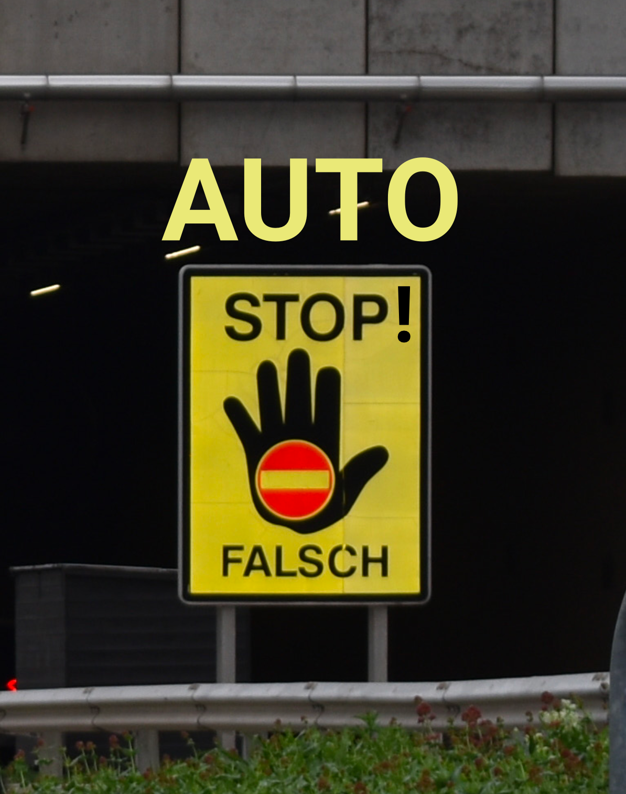

A week in Vienna
Is an investigative event that will produce proposals and performative actions, such as manifestos, digital dissemination, or pamphlets, aimed at raising awareness about the problems generated by personal automobiles in cities. The proposals will work towards improving the quality of life for humans and non-humans, including fauna, flora, climate, architecture, and living conditions as a collective existence.


The headquarter

To be
continued
The next steps involve two more meetings in the cities of Santiago de Chile and Buenos Aires, where we will spend another two weeks continuing what was started in Vienna and adding work based on the perspectives from these two cities.
